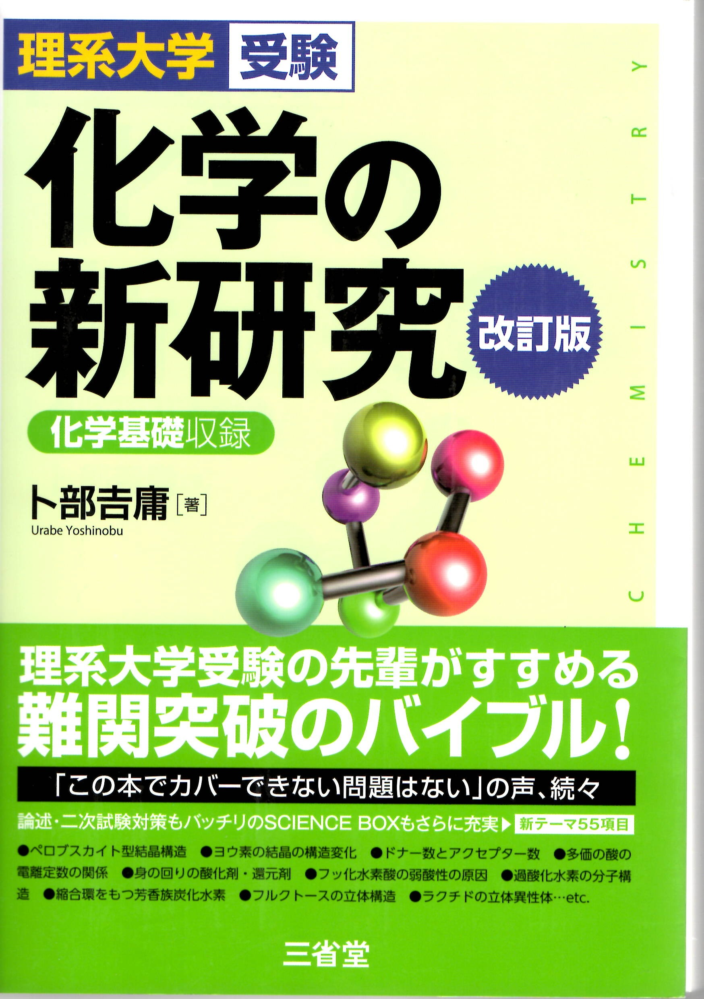

← ポータルに戻る
化学の新研究 改訂版
全836ページ

まえがき・目次
p.1–11
▶
0
まえがき・目次
p.1
第1章 物質の構成
p.12–113
▶
1
物質の構成
p.12
2
原子とイオン
p.27
3
化学結合
p.48
4
原子量分子量と物質量
p.95
5
化学反応式の量的関係
p.106
第2章 物質の状態と溶液
p.114–212
▶
1
粒子の熱運動と拡散
p.114
2
物質の三態と状態変化
p.120
3
液体の蒸気圧と沸騰
p.128
4
気体の性質
p.134
5
混合気体と蒸気圧
p.140
6
理想気体と実在気体
p.148
7
溶解のしくみ
p.154
8
固体の溶解度
p.160
9
気体の溶解度
p.170
10
溶液の濃度
p.177
11
希薄溶液の性質
p.180
12
浸透圧
p.194
13
コロイド溶液
p.199
第3章 化学反応と平衡
p.213–398
▶
1
化学反応と熱
p.213
2
ヘスの法則と結合エネルギー
p.222
3
化学反応の速さ
p.234
4
化学平衡
p.255
5
酸と塩基
p.282
6
中和反応と塩
p.305
7
酸化還元反応
p.337
8
電池と電気分解
p.359
第4章 無機物質
p.399–534
▶
1
水素と希ガス
p.399
2
ハロゲンとその化合物
p.404
3
酸素硫黄とその化合物
p.412
4
窒素リンとその化合物
p.427
5
炭素ケイ素とその化合物
p.440
6
気体の製法と性質
p.458
7
アルカリ金属とその化合物
p.464
8
アルカリ土類金属とその化合物
p.472
9
アルミニウムとその化合物
p.480
10
亜鉛水銀とその化合物
p.486
11
スズ鉛とその性質
p.491
12
遷移元素の特徴
p.496
13
錯イオンと錯塩
p.499
14
鉄とその化合物
p.505
15
銅とその化合物
p.514
16
銀とその化合物
p.519
17
クロムマンガンとその化合物
p.523
18
金属イオンの分離確認
p.527
第5章 有機化合物
p.535–689
▶
1
有機化合物の特徴
p.535
2
有機化合物の分類
p.538
3
有機化合物の構造決定
p.541
4
アルカンとシクロアルカン
p.549
5
アルケン
p.559
6
アルキン
p.569
7
石油と天然ガスと石炭
p.576
8
アルコールとエーテル
p.580
9
アルデヒドとケトン
p.589
10
カルボン酸
p.597
11
エステル
p.614
12
油脂
p.619
13
セッケンと合成洗剤
p.626
14
芳香族炭化水素
p.632
15
フェノール類
p.648
16
芳香族カルボン酸
p.656
17
芳香族アミン
p.670
18
有機化合物の分離
p.684
第6章 高分子化合物
p.690–822
▶
1
天然高分子の分類と特徴
p.690
2
単糖類と二糖類
p.697
3
多糖類
p.712
4
アミノ酸
p.724
5
タンパク質
p.737
6
核酸
p.769
7
脂質
p.778
8
合成繊維
p.784
9
合成樹脂
p.793
10
ゴム
p.805
11
イオン交換樹脂
p.813
12
機能性高分子
p.817
索引
p.823–836
▶
0
索引
p.823